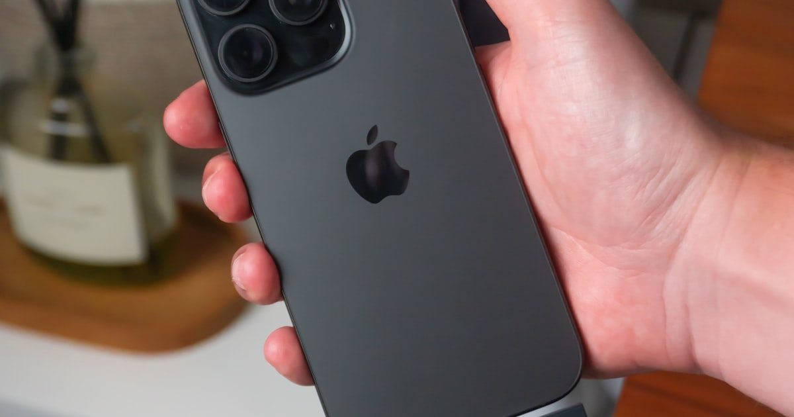

USB-C-Hubs & Docking-Stations im Vergleich: Was brauchst du wirklich?

Foto: Unsplash
Ein Laptop hat oft nur ein oder zwei USB-C-Anschlüsse – für Monitor, Tastatur, Maus, Netzwerk und Ladekabel reicht das selten. USB-C-Hubs, Docking-Stations und Thunderbolt-Docks lösen das Problem auf unterschiedlichem Niveau. Dieser Vergleich zeigt, welche Klasse für welches Setup sinnvoll ist.
Die drei Klassen im Überblick
| Klasse | Typische Ausstattung | Für wen | Preis |
|---|---|---|---|
| USB-C-Hub (kompakt) | Wenige zusätzliche USB-A-Ports, oft HDMI und Kartenleser, kompakt | Unterwegs, gelegentlicher Zusatzbedarf | ca. 20–50 € |
| USB-C-Docking-Station Empfehlung | Mehrere Monitor-Ausgänge, LAN, viele USB-Ports, oft Durchleitung von Ladestrom | Fester Home-Office-Arbeitsplatz | ca. 80–180 € |
| Thunderbolt-Dock | Sehr hohe Datenraten, mehrere hochauflösende Monitore gleichzeitig | Video-/Fotobearbeitung, anspruchsvolle Multi-Monitor-Setups | ca. 180–300 € |
USB-C-Hub (kompakt)
ca. 20–50 €Ein kompakter Hub ist die richtige Wahl, wenn du nur gelegentlich mehr Anschlüsse brauchst, etwa im Zugabteil oder beim Kunden vor Ort. Für einen dauerhaften Home-Office-Platz mit mehreren Peripheriegeräten wird es schnell eng: Steckt alles gleichzeitig, kommen viele kompakte Hubs an ihre Grenzen bei Stromversorgung oder gleichzeitiger Monitor-Nutzung.
Stärken
- Klein, leicht, ideal für unterwegs
- Günstigster Einstieg in mehr Anschlussvielfalt
Schwächen
- Meist nur ein zusätzlicher Monitor-Ausgang
- Weniger komfortabel für täglichen Auf- und Abbau am Schreibtisch
* Affiliate-Link
USB-C-Docking-Station
ca. 80–180 € Unsere EmpfehlungFür einen festen Home-Office-Arbeitsplatz ist eine Docking-Station die praktischste Lösung: Ein Kabel verbindet Laptop mit Monitor(en), Tastatur, Maus, Netzwerk und Ladegerät gleichzeitig. Damit entfällt das tägliche Einzelstecken jedes Kabels. Wichtig ist, vorab zu prüfen, wie viele Monitore in welcher Auflösung dein Laptop über USB-C überhaupt gleichzeitig ansteuern kann.
Stärken
- Ein Kabel für den kompletten Arbeitsplatz – schnelles An- und Abdocken
- Meist mehrere Monitor-Ausgänge und ausreichend Ladeleistung für den Laptop
Schwächen
- Weniger mobil als ein kompakter Hub
* Affiliate-Link
Thunderbolt-Dock
ca. 180–300 €Thunderbolt-Docks bieten deutlich höhere Datenraten und können mehrere hochauflösende Monitore gleichzeitig ansteuern – relevant für Video- oder Fotobearbeitung oder sehr anspruchsvolle Multi-Monitor-Setups. Für klassische Büroarbeit mit Office, Browser und Videocalls ist das in der Regel mehr Leistung, als tatsächlich gebraucht wird.
Stärken
- Höchste Datenraten und Monitor-Flexibilität am Markt
- Zukunftssicher bei wachsenden Anforderungen
Schwächen
- Deutlicher Aufpreis, den die meisten Home-Office-Nutzer nicht ausschöpfen
* Affiliate-Link
Checkliste: Darauf kommt es beim Kauf an
- Laptop-Kompatibilität: unterstützt dein USB-C-Anschluss DisplayPort-Alt-Mode oder Thunderbolt?
- Anzahl und Auflösung der Monitore: wie viele Bildschirme sollen gleichzeitig laufen, in welcher Auflösung?
- Ladeleistung (Power Delivery): reicht die Durchleitung, um den Laptop während der Nutzung zu laden?
- Portauswahl: LAN, Kartenleser, genug USB-A für vorhandene Peripherie einplanen
- Kabellänge und Standort: passt das Dock zur Position von Laptop, Monitor und Steckdose am Schreibtisch?
Häufige Fragen
Brauche ich einen USB-C-Hub oder gleich eine Docking-Station?
Ein Hub reicht, wenn du nur gelegentlich einen zusätzlichen Anschluss brauchst, etwa unterwegs. Für einen festen Home-Office-Platz mit mehreren Monitoren, Tastatur, Maus und Netzwerkkabel ist eine Docking-Station die praktischere Dauerlösung, weil du morgens nur ein Kabel einsteckst.
Lohnt sich ein Thunderbolt-Dock für den normalen Home-Office-Alltag?
Für die meisten Nutzer nicht. Thunderbolt lohnt sich vor allem, wenn du zwei hochauflösende externe Monitore gleichzeitig ansteuern willst oder sehr hohe Datenraten brauchst, etwa bei Video- oder Fotobearbeitung. Für E-Mail, Office und Browser reicht eine normale USB-C-Docking-Station.
Worauf muss ich bei der Kompatibilität achten?
Prüfe, ob dein Laptop USB-C mit DisplayPort-Alt-Mode oder Thunderbolt unterstützt – nicht jeder USB-C-Anschluss kann Bild ausgeben oder Strom liefern. Achte außerdem auf die maximale Monitor-Auflösung und Bildwiederholrate, die die Docking-Station laut Hersteller unterstützt.
Fazit
Für die meisten Home-Office-Arbeitenden ist eine USB-C-Docking-Station (80–180 €) die sinnvollste Wahl: Sie deckt Monitor, Peripherie, Netzwerk und Ladestrom über ein einziges Kabel ab und macht den täglichen Auf- und Abbau des Arbeitsplatzes einfach. Ein kompakter Hub genügt nur für gelegentlichen oder mobilen Bedarf, ein Thunderbolt-Dock lohnt sich nur bei sehr anspruchsvollen Multi-Monitor- oder Datenanforderungen.